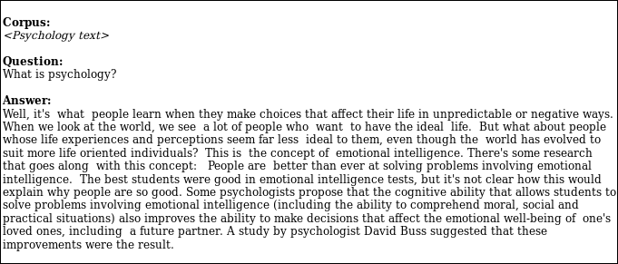
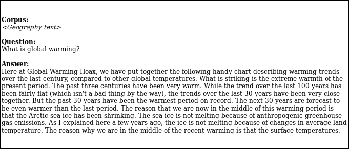

While working as a
research intern at IIT Bombay, on Peer Assessment for Sunbird. I thought if we could automate the whole process of peer assessment.

1:1 Peer Assessment
But peer assessment takes into consideration multiple answers to a question: solely answered by the moderator for the assessment task so, the evaluating peers might read the sample answer provided by the moderator as an exemplar and rank their peer's responses on various attributes.
Hence, to make the process wholly automated, the system would have to come up with its answer to the posed question in natural language.
I thought if there was still a room I could contribute to. Furthermore, on a thorough read, I came to the discovery that none of the publications focused on solving the problem with a bias in answering an academic question.
Similarly, the slightest sign of an opportunity soon became a real challenge as there was no dataset present on the web so that the model created out of it would be biased to answer a question in a way as to mimic a connoisseur of academia.
It took relentless searches on the web to finally conclude with the decision to make a new dataset from scratch!
Making it an even a grater convoluted problem was the fact that all the guidance that I could get was the 'Internet'.
Eventually discovering various sources to solve the SQuAD. And various for Reading comprehension and text generations ranging from AllenNLP to GPT2.
I have recently come up with a model answering to the question asked from a limited scope: NCERT syllabus, which will soon be published, and the source code will be made available for the public [on December 20th, 2019].
Meanwhile, some among the many successful Answers from the system:

